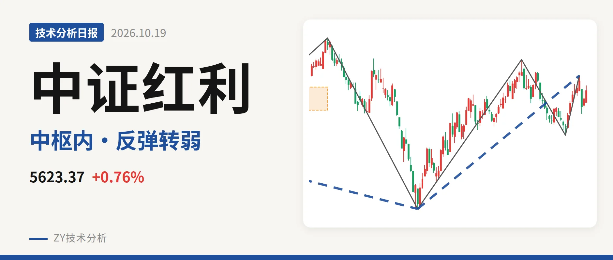
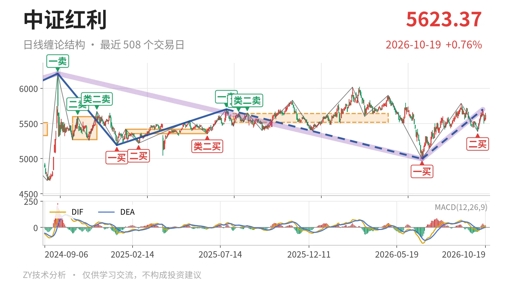

中证红利｜冲高5701点未破一卖，回踩中枢

最近日线中枢 5518.46—5639.99点，收盘位于中枢之内
一句话：短线回试中枢，反弹笔红柱面积较前波明显缩小，结构中性。
📐 走势结构：日线反弹段未结束，更大级别仍受制于下跌段
当前日线级别仍处于6月30日以来的上涨线段中，最近高点在10月14日5701.06点，涨约14.1%，内部已走出三笔，还没有结束。更大级别看，2024年10月8日至6月30日的下跌走势没有结束，6月30日以来的上涨走势也在延续，因此当前先按下跌段内的反向回升处理，不能看作大级别反转。最新收盘5580.71点，10月15日至16日两根K线回落，属于上涨线段内部的高位回试。

📍 中枢与位置：回到最近日线笔中枢内，中轴5579点
最新收盘5580.71点位于2025年8月4日至4月30日形成的日线笔中枢5518.46—5639.99点之内，距上沿约59点，距下沿约62点，位置基本贴在中轴。该中枢尚未完成，中轴5579.23点较2025年1月27日至6月23日中枢中轴5385.16点明显抬高，属于中枢上移后的震荡。
🔖 买卖点：一买、二买保持，一卖5702点未升破
日线笔级别上，6月30日一买在4995.49点，9月29日二买在5386.04点，这两个买点仍未被跌破。10月14日反弹至5701.06点，距2025年7月23日一卖5702.03点仅差0.97点，没有升破，因此该一卖仍对应日线笔级别。10月15日至16日回落到5499.89点，未触及5386点，9月29日二买结构还在；其后的上涨笔已经结束，但未破坏买点结构。

⚡ 背驰：反弹笔力度较前一波明显转弱
反弹笔力度较前一波明显转弱。6月30日至9月1日上涨笔红柱面积1451，DIF高点68.7；9月29日至10月14日上涨笔红柱面积85，DIF高点11.1，两者差距很大。后一笔高点5701.06点没有超过前高5786.14点，因此不算典型“新高不新强”，但反弹高度和力度都不足。10月15日回落使9月29日这笔结束，力度比较回到6月30日上涨线段内部。最新日线MACD的DIF为8.1，在零轴之上，柱值19.7，动能不算强。
🔑 关键位置观察：不破5386点仍属中枢震荡
短线不破5386点，日线结构仍属中枢震荡。反抽若不能重新站上5639.99点中枢上沿，就仍在震荡结构内；回踩若守住5518.46点下沿，震荡延续。若回落跌破5386点，9月29日二买被破坏，结构将重新考验4995点一买。只有重新站上5702点上方，2025年7月23日一卖才被升破，6月30日以来的上涨线段才有向上离开中枢的条件。
🎯 结构判断：中性，弱在反弹笔力度不足
当前没有脱离日线笔中枢，10月14日冲高未升破一卖，9月29日以来的反弹笔红柱面积和DIF高点都远小于6月30日至9月1日那一笔，短线结构中性略弱。弱的证据不在价格深度，而在反弹高度未破前高、力度持续萎缩。更合适的定性是：日线级别仍按中枢震荡处理。
⚠️ 本文为基于公开行情数据的缠论技术结构记录，由程序自动计算并生成，仅供学习交流，不构成任何投资建议。市场有风险，投资需谨慎。